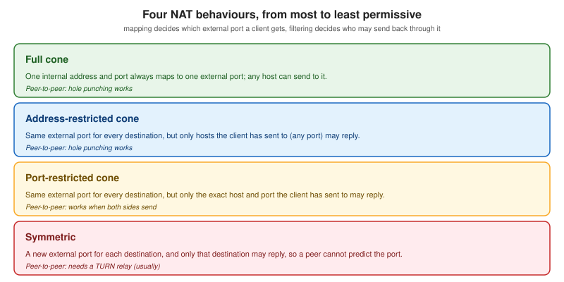

Networking Fundamentals
|
This content was generated with the assistance of AI and should be verified against the official documentation before being relied on in production. |
Every real-time feature in this section rides on a few network facts: how a byte travels from one machine to another, what the transport guarantees, what a NAT or a proxy does to it on the way, and how long a quiet connection survives. This page collects those facts once, so that the pages on the WebSocket protocol, ICE, STUN and TURN and proxies, load balancers and deployment can refer to it.
Versions and specifications were checked on 2026-10-24. The baseline is TCP (RFC 9293), UDP (RFC 768), TLS 1.3 (RFC 8446) with ALPN (RFC 7301), HTTP/2 (RFC 9113) and HTTP/3 (RFC 9114) over QUIC (RFC 9000 with RFC 9001), WebSocket over HTTP/2 (RFC 8441) and over HTTP/3 (RFC 9220), NAT behavioural requirements for UDP (RFC 4787), STUN (RFC 8489), TURN (RFC 8656) and ICE (RFC 8445). The examples were run on Node.js 24 with only its built-in modules, curl 8.7.1 and OpenSSL.
The three scenarios use the network differently. Chatterbox (chat) sends small, ordered, reliable messages and tolerates a second of delay, so it uses WebSocket over TCP and TLS. Huddle (videoconference) needs mouth-to-ear delay below roughly 150 ms and prefers a late packet to be dropped rather than delayed, so its media travels over UDP (WebRTC). Pixel Arena (game) sends input and snapshots many times a second, and a stale snapshot is worth nothing, so it uses WebSocket for simple games and unreliable WebRTC data channels or WebTransport when latency matters.
TCP and UDP
TCP gives an application a reliable, ordered byte stream. The sender splits the stream into segments, the receiver acknowledges them, lost segments are retransmitted, and the receiver hands bytes to the application only in order. Connection setup costs a round trip (the three-way handshake), and the sender starts slowly (slow start) and grows its sending window until it detects loss. Browsers' HTTP, HTTP/2 and WebSocket traffic uses TCP when it is not carried over QUIC.
UDP gives an application individual datagrams. There is no connection, no retransmission, no ordering and no congestion control: a datagram arrives once, late, out of order or never. The application, or a protocol built on top of UDP such as RTP, QUIC or SCTP-over-DTLS, adds whatever it needs. UDP is what WebRTC media and data channels use.
| Property | TCP | UDP |
|---|---|---|
Unit |
Byte stream, no message boundaries |
Datagram with boundaries |
Delivery |
Reliable, retransmitted |
Best effort |
Ordering |
In order |
None |
Connection setup |
Three-way handshake (one round trip) |
None |
Congestion control |
Built in |
Left to the application |
Typical users here |
WebSocket, HTTP/1.1, HTTP/2, TURN over TCP |
WebRTC media and data channels, QUIC, STUN, TURN |
Because TCP has no message boundaries, a socket.write of three messages can arrive as one chunk, and one message
can arrive as two chunks. Protocols running directly on TCP must frame their messages: with a delimiter, a length
prefix, or, as WebSocket does, a frame header. The first example shows the mistake that framing prevents.
// tcp-echo.mjs: a line-delimited Chatterbox envelope over raw TCP
import net from 'node:net';
const server = net.createServer((socket) => {
let buffered = '';
socket.setEncoding('utf8');
socket.on('data', (chunk) => {
// One data event may hold half a line or several lines.
buffered += chunk;
let newline;
while ((newline = buffered.indexOf('\n')) !== -1) {
const line = buffered.slice(0, newline);
buffered = buffered.slice(newline + 1);
socket.write(line + '\n');
}
});
});
server.listen(0, '127.0.0.1', () => {
const { port } = server.address();
const client = net.connect(port, '127.0.0.1');
client.setEncoding('utf8');
let received = 0;
client.on('data', (chunk) => {
console.log('client got chunk:', JSON.stringify(chunk));
received += chunk.split('\n').length - 1;
if (received === 3) { client.end(); server.close(); }
});
for (const n of [1, 2, 3]) {
const envelope = { v: 1, type: 'msg.send', id: `m${n}`, room: 'general', ts: Date.now(), payload: { text: `hello ${n}` } };
client.write(JSON.stringify(envelope) + '\n');
}
});Run it with node tcp-echo.mjs. On loopback the three envelopes typically come back in a single chunk, containing
three newline-terminated lines: the proof that a data event is not a message.
Source: Node.js documentation: net
The UDP counterpart keeps datagram boundaries, but nothing guarantees delivery, so the example numbers every datagram and measures what comes back.
// udp-echo.mjs: a Pixel Arena style input datagram, echoed, with RTT, jitter and loss measured
import dgram from 'node:dgram';
const server = dgram.createSocket('udp4');
server.on('message', (msg, rinfo) => server.send(msg, rinfo.port, rinfo.address));
server.bind(0, '127.0.0.1', () => {
const { port } = server.address();
const client = dgram.createSocket('udp4');
const samples = [];
const COUNT = 50;
let sent = 0;
client.on('message', (msg) => {
const { seq, t0 } = JSON.parse(msg.toString());
samples.push({ seq, rtt: Number(process.hrtime.bigint() - BigInt(t0)) / 1e6 });
});
const timer = setInterval(() => {
if (sent === COUNT) {
clearInterval(timer);
setTimeout(report, 200);
return;
}
client.send(JSON.stringify({ seq: sent, t0: process.hrtime.bigint().toString() }), port, '127.0.0.1');
sent++;
}, 20);
function report() {
const rtts = samples.map((s) => s.rtt);
const mean = rtts.reduce((a, b) => a + b, 0) / rtts.length;
let jitter = 0;
for (let i = 1; i < rtts.length; i++) jitter += Math.abs(rtts[i] - rtts[i - 1]);
jitter /= Math.max(1, rtts.length - 1);
const got = new Set(samples.map((s) => s.seq)).size;
console.log(`sent=${COUNT} received=${got} loss=${(((COUNT - got) / COUNT) * 100).toFixed(1)}%`);
console.log(`rtt mean=${mean.toFixed(3)} ms min=${Math.min(...rtts).toFixed(3)} max=${Math.max(...rtts).toFixed(3)} jitter=${jitter.toFixed(3)} ms`);
client.close();
server.close();
}
});On the loopback interface the result is typically no loss, a mean RTT well under a millisecond and a jitter of tens of
microseconds. Point the same script at a remote machine (bind the server on a public address and change the client
address) to see real numbers, and run it under sudo tc qdisc add dev eth0 root netem delay 40ms 10ms loss 2% on
Linux to simulate a bad network.
Source: Node.js documentation: dgram
Head-of-line blocking
When TCP loses one segment, it holds back every later byte until the missing segment is retransmitted, even if those bytes have already arrived. This is head-of-line (HOL) blocking. For a chat message it costs a round trip or two and nobody notices. For a game snapshot or an audio frame it is harmful: the newest state is stuck behind an old one that the application no longer wants.
HOL blocking appears at several layers:
-
TCP: one lost segment stalls the whole connection. HTTP/1.1 and WebSocket have one TCP stream per connection, so all messages on a WebSocket queue behind the lost one.
-
HTTP/2: many streams share one TCP connection, so a lost segment stalls all of them. HTTP/2 removed HTTP/1.1’s request-level blocking but kept TCP’s.
-
QUIC and HTTP/3: streams are independent, so a lost packet stalls only the streams whose data it carried.
-
WebRTC data channels: they can be created with
ordered: falseandmaxRetransmits: 0(ormaxPacketLifeTime) to get UDP-like behaviour on top of SCTP, which is why Pixel Arena uses them for input and snapshots. See WebRTC data channels.
The practical consequences: do not multiplex a game’s snapshots and its chat on one TCP connection if you can avoid it; do not send large messages on the same WebSocket as latency-sensitive ones; and prefer a transport with unreliable delivery for state that is replaced by the next update. The options are compared in the real-time web overview and WebTransport and Media over QUIC.
Latency, jitter, packet loss and bandwidth
Four numbers describe a path, and real-time applications care about the first three more than the last.
-
Latency is the time for a packet to cross the network. Round-trip time (RTT) is there and back. It has a floor set by the speed of light in fibre (about 5 ms per 1000 km one way), plus queueing and processing. More bandwidth does not reduce it.
-
Jitter is the variation of latency from packet to packet. A voice or video receiver absorbs it with a jitter buffer, trading a little extra delay for smooth playback. RFC 3550 defines the smoothed estimator that WebRTC reports in its statistics (see stats, quality and bandwidth).
-
Packet loss is the share of packets that never arrive, from congestion, wireless interference or a full buffer. TCP hides it with retransmission at the cost of delay; RTP hides it with forward error correction, retransmission requests or concealment.
-
Bandwidth is how many bits per second the path carries. It limits video resolution and the number of participants an SFU can forward, but a chat message of 200 bytes is limited by latency, not bandwidth.
Guideline budgets that the later pages use: a chat message may take a second or two; a call needs below roughly 150 ms one way mouth to ear; an action game wants a round trip below about 100 ms and a tick rate of 20 to 60 per second. The measurement example above reports all of them for a UDP path. For WebSocket, the application-level ping described in connection lifecycle, heartbeats and reconnection measures RTT over TCP.
TLS: wss, TLS 1.3 and ALPN
wss:// is a WebSocket over TLS, as https:// is HTTP over TLS. Browsers on a secure page (an https:// origin)
refuse to open plain ws:// connections to remote hosts, and getUserMedia needs a secure context, so production
Chatterbox, Huddle and Pixel Arena all use TLS. TLS also stops proxies and networks from tampering with the frames,
and it is the reason WebSockets pass through more corporate proxies: a proxy that cannot read the bytes cannot
misinterpret an Upgrade request.
TLS 1.3 (RFC 8446, 2018) removes the legacy options of TLS 1.2: only forward-secret key exchanges, only AEAD ciphers (AES-GCM, ChaCha20-Poly1305), and a one-round-trip handshake. A resumed connection can send early data (0-RTT), but that data is replayable, so never use it for non-idempotent operations such as sending a chat message. TLS 1.0 and 1.1 were deprecated by RFC 8996; configure servers for TLS 1.2 as a minimum and prefer 1.3.
ALPN (Application-Layer Protocol Negotiation, RFC 7301) lets the client offer a list of protocol identifiers in the
TLS ClientHello and the server pick one, so that no extra round trip is needed to decide between HTTP/1.1, HTTP/2 and
HTTP/3. The identifiers are http/1.1, h2 and h3. It matters for WebSockets because the negotiated protocol
decides how the WebSocket handshake is carried (next section). A load balancer that terminates TLS and offers only
http/1.1 upstream forces the Upgrade mechanism even if the browser speaks HTTP/2 to it.
The next example generates a self-signed certificate in a temporary directory, starts a local TLS server that offers
h2 and http/1.1, connects with tls.connect, and prints the negotiated TLS version, cipher and ALPN protocol.
CERT_DIR="$(mktemp -d)"
openssl req -x509 -newkey rsa:2048 -nodes -days 1 \
-keyout "$CERT_DIR/key.pem" -out "$CERT_DIR/cert.pem" \
-subj "/CN=localhost" -addext "subjectAltName=DNS:localhost,IP:127.0.0.1"
node tls-inspect.mjs "$CERT_DIR"// tls-inspect.mjs: inspect what a TLS handshake negotiated
import tls from 'node:tls';
import fs from 'node:fs';
import path from 'node:path';
const dir = process.argv[2];
const server = tls.createServer({
key: fs.readFileSync(path.join(dir, 'key.pem')),
cert: fs.readFileSync(path.join(dir, 'cert.pem')),
minVersion: 'TLSv1.2',
ALPNProtocols: ['h2', 'http/1.1'],
}, (socket) => { socket.end('bye\n'); });
server.listen(0, '127.0.0.1', () => {
const { port } = server.address();
const socket = tls.connect({
host: '127.0.0.1',
port,
servername: 'localhost',
ALPNProtocols: ['h2', 'http/1.1'],
ca: fs.readFileSync(path.join(dir, 'cert.pem')), // trust only our own certificate
}, () => {
console.log('authorized :', socket.authorized);
console.log('TLS version :', socket.getProtocol());
console.log('cipher :', socket.getCipher().name);
console.log('ALPN negotiated :', socket.alpnProtocol);
console.log('session reused :', socket.isSessionReused());
socket.end();
server.close();
});
socket.on('error', (e) => { console.error(e.message); server.close(); });
socket.resume();
});The output on Node.js 24 is TLSv1.3, an AES-256-GCM cipher and h2. Change the client to offer only http/1.1 and
the server picks that instead. Never disable certificate validation in production code (rejectUnauthorized: false):
the example trusts one pinned certificate through ca instead.
Source: Node.js documentation: tls
From HTTP/1.1 Upgrade to HTTP/2 and HTTP/3 extended CONNECT
A WebSocket starts life as an HTTP request. How that request is spelled depends on the HTTP version.
HTTP/1.1 (RFC 6455) uses the Upgrade mechanism. The client sends a GET with Connection: Upgrade,
Upgrade: websocket, Sec-WebSocket-Key and Sec-WebSocket-Version: 13; the server answers 101 Switching Protocols
with Sec-WebSocket-Accept, and from then on the TCP connection carries WebSocket frames instead of HTTP. The whole
connection is consumed by the WebSocket.
GET /ws HTTP/1.1
Host: chat.example.test
Connection: Upgrade
Upgrade: websocket
Sec-WebSocket-Key: dGhlIHNhbXBsZSBub25jZQ==
Sec-WebSocket-Version: 13
Origin: https://chat.example.test
HTTP/1.1 101 Switching Protocols
Connection: Upgrade
Upgrade: websocket
Sec-WebSocket-Accept: s3pPLMBiTxaQ9kYGzzhZRbK+xOo=HTTP/2 has no Upgrade and no 101 status. RFC 8441 (2018) bootstraps a WebSocket on one HTTP/2 stream instead,
so the connection can keep serving other requests. The server advertises support with the setting
SETTINGS_ENABLE_CONNECT_PROTOCOL (identifier 0x08, value 1). The client then sends an extended CONNECT request:
method CONNECT, a new pseudo-header :protocol set to websocket, plus :scheme, :path and :authority, and the
usual sec-websocket-version header. A 200 response opens the stream, and WebSocket frames travel inside HTTP/2 DATA
frames. The Sec-WebSocket-Key and Sec-WebSocket-Accept headers are not used, because the stream is not a hijacked
HTTP/1.1 connection.
:method = CONNECT
:protocol = websocket
:scheme = https
:path = /ws
:authority = chat.example.test
sec-websocket-version = 13
origin = https://chat.example.test
:status = 200HTTP/3 works the same way: RFC 9220 (2022) applies the RFC 8441 mechanism to HTTP/3 and QUIC, using the same
SETTINGS_ENABLE_CONNECT_PROTOCOL setting (an HTTP/3 setting with the same meaning) and the same extended CONNECT
request on a QUIC stream.
The browser API does not change at all: new WebSocket('wss://chat.example.test/ws') works whichever version is
negotiated, and the application code, close codes and subprotocols are identical. Implications:
-
A server or proxy that supports only HTTP/1.1 Upgrade works with every browser. Browsers fall back to HTTP/1.1 for the WebSocket when ALPN did not select a version that supports extended CONNECT.
-
Over HTTP/2 or HTTP/3, many WebSockets and ordinary requests can share one connection, which removes the six connections per host limit of HTTP/1.1 browsers and avoids opening a new TLS handshake per socket.
-
Over HTTP/2, all those WebSockets share one TCP connection and therefore one head-of-line domain. Over HTTP/3 they do not.
-
Intermediaries must understand the variant: a proxy that terminates HTTP/2 and speaks HTTP/1.1 to the backend must translate the extended CONNECT into an Upgrade request, and must forward the headers listed in the proxy section.
The next commands check which HTTP version a server negotiates. They use the Node.js http2 server below, which also
accepts HTTP/1.1 clients and advertises SETTINGS_ENABLE_CONNECT_PROTOCOL.
// h2-server.mjs: HTTPS server for HTTP/2 and HTTP/1.1, advertising RFC 8441 support
import http2 from 'node:http2';
import fs from 'node:fs';
import path from 'node:path';
const dir = process.argv[2];
const server = http2.createSecureServer({
key: fs.readFileSync(path.join(dir, 'key.pem')),
cert: fs.readFileSync(path.join(dir, 'cert.pem')),
allowHTTP1: true,
settings: { enableConnectProtocol: true },
});
server.on('request', (req, res) => {
res.setHeader('content-type', 'text/plain');
res.end(`hello over HTTP/${req.httpVersion}\n`);
});
server.listen(8443, '127.0.0.1', () => console.log('https://localhost:8443'));node h2-server.mjs "$CERT_DIR" &
# Negotiate HTTP/2 through ALPN; -k accepts the self-signed certificate
curl -sk --http2 -o /dev/null -w 'negotiated HTTP/%{http_version}\n' https://localhost:8443/
# Force HTTP/1.1
curl -sk --http1.1 -w 'negotiated HTTP/%{http_version}\n' https://localhost:8443/
# Show the TLS version and the ALPN decision
curl -sk --http2 -v https://localhost:8443/ 2>&1 | grep -iE 'ALPN|SSL connection'
# HTTP/3 needs a curl built with HTTP/3 support; check "HTTP3" in the Features line of curl -V
curl -sk --http3 -I https://chat.example.test/
kill %1The first command prints negotiated HTTP/2, the second hello over HTTP/1.1 and negotiated HTTP/1.1, and the
verbose output contains ALPN: server accepted h2 and TLS 1.3. The --http3 command needs a curl with the HTTP3
feature; without it curl says that the installed libcurl does not support it. HTTP/3 uses UDP port 443, so a server
reachable by HTTP/1.1 and HTTP/2 is not reachable by HTTP/3 until a firewall opens UDP 443 and the server advertises
it with an Alt-Svc header.
QUIC
QUIC (RFC 9000, 2021) is a transport protocol built on UDP, with TLS 1.3 integrated into its handshake (RFC 9001) and its loss recovery and congestion control specified in RFC 9002. It is the transport of HTTP/3 and of WebTransport.
-
Combined handshake: transport and TLS handshakes complete together in one round trip, and resumption allows 0-RTT data with the same replay caveat as TLS 1.3.
-
Independent streams: each stream is ordered and reliable, but streams do not block one another, so there is no TCP-style head-of-line blocking between them.
-
Connection migration: a connection is identified by a connection ID, not by the address pair, so a phone that moves from Wi-Fi to cellular can keep the connection.
-
Always encrypted: nearly everything, including most of the transport headers, is protected, which makes it harder for middleboxes to interfere.
-
User space: QUIC is implemented in libraries rather than the operating system, so it evolves faster, at the cost of more CPU than kernel TCP.
-
Unreliable datagrams: the QUIC datagram extension (RFC 9221) is what WebTransport uses for unreliable messages, the alternative to WebRTC data channels discussed in WebTransport and Media over QUIC.
Some networks block or rate-limit UDP, so a client must always be able to fall back to TCP, TLS and HTTP/2 or HTTP/1.1. Browsers do this automatically for HTTP/3, and WebRTC does it through TURN over TCP or TLS.
NAT and why peer-to-peer is hard
Most devices sit behind a Network Address Translator that rewrites private source addresses to the router’s public address and a mapped port. Outbound connections work because the NAT creates a mapping when the first packet leaves. An unsolicited inbound packet has no mapping, so the NAT drops it. A WebSocket client is always the one that connects outwards, so NAT is invisible to it; a videoconference between two browsers has two clients behind two NATs and neither can connect to the other directly.
RFC 4787 splits NAT behaviour into two independent properties. Mapping decides which external address and port a given internal address and port gets for each destination. Filtering decides which external hosts may send packets back through that mapping. The informal "cone" names combine them:

-
Full cone: one mapping per internal endpoint, and anyone who learns the external address can send to it.
-
Address-restricted cone: one mapping per internal endpoint, but only hosts the client already sent a packet to may reply, from any port.
-
Port-restricted cone: like the previous one, but a reply must come from the exact host and port contacted.
-
Symmetric: a different mapping for each destination, so the port seen by a STUN server is not the port a peer would see.
These classic names come from the older RFC 3489; RFC 4787 replaced them with "endpoint-independent", "address-dependent" and "address and port-dependent" mapping and filtering, and describes them for UDP. Many consumer routers behave as port-restricted cones, and enterprise and carrier-grade NATs are often symmetric.
Peer-to-peer connection setup (ICE, RFC 8445) works around this in steps:
-
Each peer lists its candidate addresses: host addresses on its own interfaces, server-reflexive addresses learned from a STUN server (a STUN Binding request returns the public address and port that the NAT mapped), and relayed addresses allocated on a TURN server.
-
The peers exchange these candidates through a signalling channel, in the case of Huddle a WebSocket, see signalling and perfect negotiation.
-
Both peers send connectivity checks to every candidate pair at the same time. Outgoing packets create the NAT mappings that let the other side’s checks come through; this is UDP hole punching.
-
The best working pair is selected.
Hole punching succeeds between cones. It usually fails when either side is symmetric, because the address the peer learned from STUN is not the one used towards the other peer. Then the only option is a TURN relay, which both peers reach by an outbound connection, and which forwards the media at the cost of bandwidth and added delay. That is why a videoconference needs a TURN server for a share of its users even though most calls go direct, and why TURN capacity is a scaling concern: see scaling WebRTC and TURN. For the mechanics of candidates and checks read ICE, STUN and TURN.
NAT mappings also expire. A UDP mapping typically lives from tens of seconds to a few minutes without traffic, and TCP mappings last longer but not forever. WebRTC sends consent-freshness checks and keepalives to hold the mapping, and WebSocket heartbeats do the same for TCP.
Ports
| Port | Protocol | Used for |
|---|---|---|
80 |
TCP |
Plain HTTP and |
443 |
TCP |
HTTPS and |
443 |
UDP |
HTTP/3 and QUIC; also a TURN-over-UDP fallback when configured |
3478 |
UDP and TCP |
STUN and TURN (RFC 8489, RFC 8656) |
5349 |
TCP (TLS) and UDP (DTLS) |
STUN and TURN over TLS or DTLS ( |
49152-65535 |
UDP |
Default ephemeral range; media servers and TURN relays use a configured subrange for relayed traffic |
A WebSocket server normally listens on 80 or 443 through a reverse proxy, or on an internal port such as 3000 behind
it. Browsers connecting to 443 pass the most firewalls, so Huddle offers TURN on 3478 for the common case and
turns: on 443 or 5349 for strict networks. The port ranges of media servers are covered in
scaling WebRTC and TURN.
Proxies and load balancers in the path
Between a browser and the application there is usually at least one reverse proxy or load balancer (nginx, HAProxy, Envoy, an AWS Application Load Balancer, a CDN), and possibly a forward proxy at the client’s company. Each is a place where a WebSocket can break.
Upgrade forwarding. Upgrade and Connection are hop-by-hop headers, so an HTTP/1.1 proxy removes them unless it is
told to forward them. nginx needs proxy_http_version 1.1 and explicit Upgrade and Connection headers. Without
them the backend sees an ordinary GET, answers 400 or 200, and the browser reports a failed handshake. Some
proxies (the AWS Application Load Balancer, Envoy with upgrade_configs, HAProxy) recognise WebSocket without extra
configuration; check each product’s documentation.
Idle timeouts. A proxy closes a connection that carries no bytes for its idle timeout. The nginx default is 60 s
(proxy_read_timeout). The AWS Application Load Balancer defaults to 60 s as well, and it can be configured between 1
and 4000 s. A quiet chat room therefore loses its sockets every minute unless something moves bytes. Set the
heartbeat interval below the shortest timeout in the path (for a 60 s timeout, ping every 20 to 30 s) and raise the
timeout where the platform allows it. The WebSocket close code that appears on the client when this happens is 1006,
an abnormal closure, because no close frame was received.
Buffering and compression. Disable response buffering for streaming endpoints (proxy_buffering off), and do not let a
proxy compress already compressed WebSocket traffic.
TLS termination. A proxy that terminates TLS must offer the protocol versions and ALPN identifiers the clients
need, and it should pass X-Forwarded-For and X-Forwarded-Proto so the application can log the client address and
build wss:// URLs.
Load-balancing state. A WebSocket is a long-lived connection, so a load balancer decides once, at the handshake, which backend serves it. The backends must share state (a backplane) to broadcast across servers, and sticky sessions are needed only for HTTP long-polling fallbacks. See scaling WebSockets. Because connections are long-lived, a rolling deployment drains old connections gradually and the clients reconnect; see proxies, load balancers and deployment.
Connection limits and Origin. Proxies cap the number of open connections and file descriptors. The Origin check
belongs on the backend or at the proxy, since browsers do not apply the same-origin policy to WebSocket handshakes;
compare CORS and the security page.
A minimal nginx configuration for a Chatterbox backend on port 3000 follows. The map block sets Connection to
upgrade for WebSocket requests and to close for ordinary ones.
map $http_upgrade $connection_upgrade {
default upgrade;
'' close;
}
upstream chatterbox {
server 127.0.0.1:3000;
}
server {
listen 443 ssl;
http2 on;
server_name chat.example.test;
ssl_certificate /etc/nginx/tls/chat.example.test.pem;
ssl_certificate_key /etc/nginx/tls/chat.example.test.key;
ssl_protocols TLSv1.2 TLSv1.3;
location /ws {
proxy_pass http://chatterbox;
proxy_http_version 1.1;
proxy_set_header Upgrade $http_upgrade;
proxy_set_header Connection $connection_upgrade;
proxy_set_header Host $host;
proxy_set_header X-Forwarded-For $proxy_add_x_forwarded_for;
proxy_set_header X-Forwarded-Proto $scheme;
proxy_read_timeout 120s; # must exceed the application heartbeat interval
proxy_send_timeout 120s;
proxy_buffering off;
}
}Here the browser may speak HTTP/2 to nginx, and nginx translates the WebSocket to an HTTP/1.1 Upgrade towards the
backend, which is why proxy_http_version 1.1 is required. To test the Upgrade mechanism through any proxy, send the
handshake with curl and look for 101:
curl -i -N --http1.1 \
-H 'Connection: Upgrade' -H 'Upgrade: websocket' \
-H 'Sec-WebSocket-Version: 13' -H 'Sec-WebSocket-Key: dGhlIHNhbXBsZSBub25jZQ==' \
https://chat.example.test/wsA 101 Switching Protocols response means the proxy forwarded the upgrade; a 400, 426 or 200 means it did not or
the backend refused.
Common errors and pitfalls
-
Treating TCP reads as messages. Frame messages yourself, or use WebSocket, which does it for you.
-
Idle connections dying every minute. A proxy idle timeout of 60 s with no heartbeat; ping more often than the timeout.
-
Handshake returns 400 or 200 behind a proxy. The
UpgradeandConnectionheaders were not forwarded. -
ws://blocked on an HTTPS page. Browsers block mixed content; usewss://. -
Calls that work at home and fail at work. One peer is behind a symmetric NAT or a UDP-blocking firewall and no TURN server is configured.
-
TURN only on UDP 3478. Strict networks allow only TCP 443; offer
turns:on 443. -
Measuring bandwidth when latency is the problem. A faster link does not shorten a round trip.
-
0-RTT for non-idempotent actions. Early data can be replayed.
-
Disabling certificate checks to silence a self-signed certificate error, and shipping that to production.
Security notes
TLS protects confidentiality and integrity on each hop but ends at the proxy that terminates it, so traffic between
the proxy and the backend must stay on a trusted network or use TLS again. A proxy that terminates TLS can read every
message. Authenticate WebSocket connections and check Origin as described in
authentication and authorization. Because UDP has no
handshake, UDP services such as a TURN server or a game server can be abused for amplification and denial of service;
require authentication (TURN credentials) and rate-limit. Do not expose an unauthenticated TURN server: it relays
traffic to the internal network.
History and specification status
-
TCP is RFC 9293 (2022), which consolidates RFC 793 and its updates; UDP is RFC 768 (1980).
-
TLS 1.3 is RFC 8446 (2018); ALPN is RFC 7301 (2014).
-
WebSocket over HTTP/1.1 is RFC 6455 (2011); over HTTP/2 RFC 8441 (2018); over HTTP/3 RFC 9220 (2022).
-
HTTP/2 is RFC 9113 (2022, obsoleting RFC 7540); HTTP/3 is RFC 9114 (2022); QUIC is RFC 9000 (2021).
-
STUN is RFC 8489 (2020); TURN is RFC 8656 (2020, obsoleting RFC 5766); ICE is RFC 8445 (2018, obsoleting RFC 5245).
-
NAT behaviour for UDP is RFC 4787 (2007), which replaced the informal classification of RFC 3489.